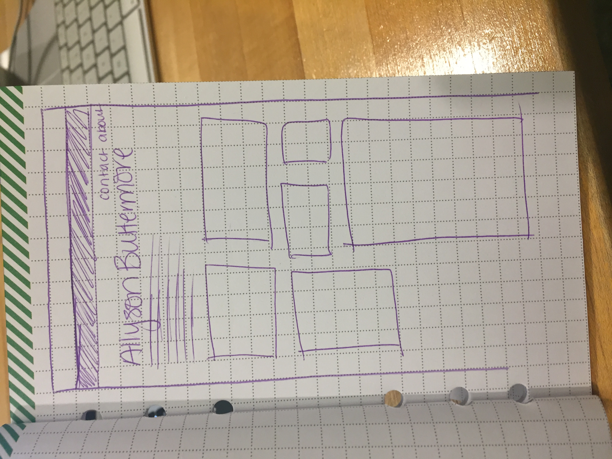
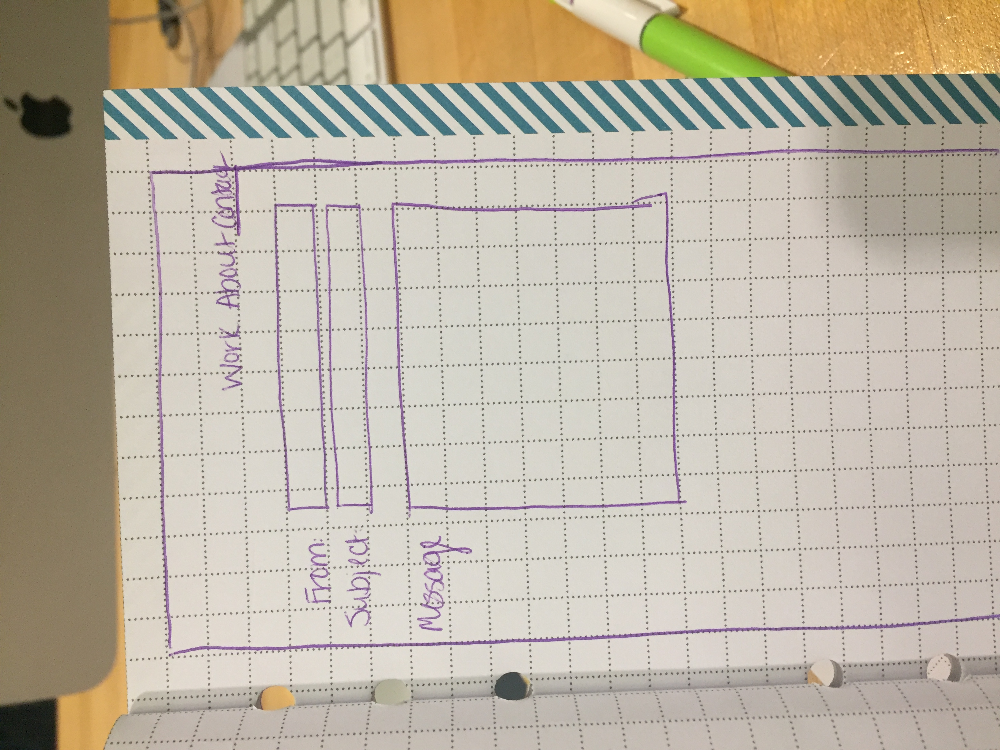

A personal portfolio is important because it stores all of your work in one place for easy access, which is important for potential employers, interviews, and even for social networking with other artists. As a graphic designer, I would like to convey organized creativity, showing my work in a simple way to let the work speak for itself. I will show all of my work, with the oldest work last, because it shows the growth over time of my knowledge and skills as a designer. I want to tell the story of adaptation and education, as prior to MassArt I hardly have any art background under my belt.
I really love the image in the back to create dimension.
I love the overall feel and look of this site, it has a lot of nice things working, but navigation is really difficult.
I like the idea of an image being static behind the text that flows over it and would like to somehow implement that into the title of my page, where I would have my name.
I also like the idea of having clean linework instead of images, so nothing conflicts with the actual body of work that I'm trying to show.
In my "contact" page, I would ideally like to include a form so that people who wish to contact me can do so directly.